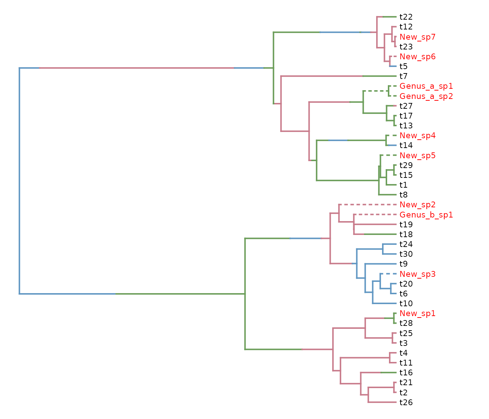
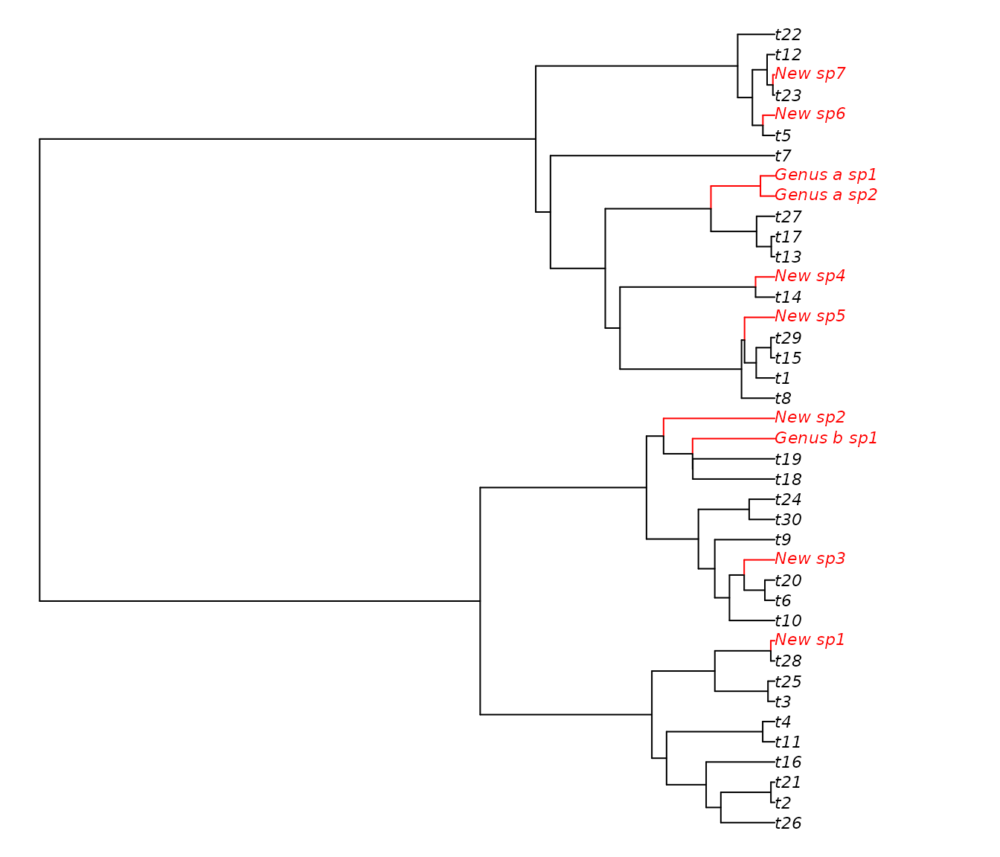
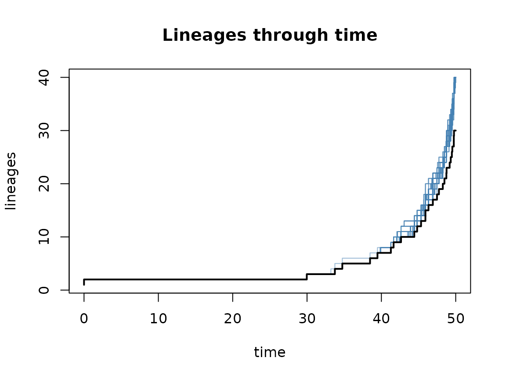

Main workflow: from data to grafted phylogenies
Maël Doré
2026-11-27
Source:vignettes/main_workflow.Rmd
main_workflow.RmdThis tutorial presents the full workflow to graft missing lineages on a time-calibrated phylogeny, from the data to the checked grafted phylogenies, following good practices to account for uncertainty:
- Start from a backbone phylogeny, its taxonomy, and tip data on a species attribute.
- Build stochastic maps (
simmap) of the attribute, to constrain where taxa can be grafted. - Build the
missing_taxa_listof the taxa and the clades to graft from the taxonomy, and thetotal_richness_per_clades. -
Check that the grafting is feasible
(
check_grafting_plan()). -
Graft both types of missing lineages in one run, on
several stochastic maps with several simulations each
(
graft_missing_taxa_and_clades()). -
Check the grafted phylogenies
(
check_grafting_constraints()), and extract grafting information (extract_grafting_info()). -
Plot a grafted phylogeny
(
plot_grafted()), flatten the outputs (flatten_grafted_phylogenies()), and use them in a downstream analysis.
All the examples use the toy datasets shipped with
the package. The inputs are only briefly presented here: see
vignette("format_inputs") for all the different ways to
build and adjust them, and
vignette("prepare_stochastic_maps") for the handling of
stochastic maps.
1/ Data: backbone, taxonomy and tip data
The backbone phylogeny is a time-calibrated, rooted, binary and ultrametric phylogeny of the sampled species (30 tips). Its taxonomy is described by a table with one row per tip and one column per taxonomic level.
# ------ Step 1: Load the backbone phylogeny and its taxonomy ------ #
data(toy_backbone)
data(toy_backbone_taxonomic_table)
# Backbone phylogeny
toy_backbone
#>
#> Phylogenetic tree with 30 tips and 29 internal nodes.
#>
#> Tip labels:
#> t26, t2, t21, t16, t11, t4, ...
#>
#> Rooted; includes branch length(s).
# Taxonomy of the backbone tips
head(toy_backbone_taxonomic_table)
#> Taxa Family Subfamily Tribe Genus
#> 1 t26 Family_A Subfam_A2 Tribe_A2a <NA>
#> 2 t2 Family_A Subfam_A2 Tribe_A2a <NA>
#> 3 t21 Family_A Subfam_A2 Tribe_A2a <NA>
#> 4 t16 Family_A Subfam_A2 Tribe_A2a <NA>
#> 5 t11 Family_A Subfam_A2 Tribe_A2a <NA>
#> 6 t4 Family_A Subfam_A2 Tribe_A2a <NA>The tip data gives the state of a species attribute
for each tip (here, a trait with three states: "blue",
"green", and "red"). We use the tip states of
the toy simmap as our “observed” tip data.
# ------ Step 2: Load the tip data ------ #
data(toy_simmap)
# Named vector of states: one value per tip of the backbone
tip_data <- phytools::getStates(toy_simmap, type = "tips")
head(tip_data)
#> t26 t2 t21 t16 t11 t4
#> "blue" "blue" "blue" "green" "blue" "blue"
table(tip_data)
#> tip_data
#> blue green red
#> 11 11 82/ Stochastic maps of the trait
Grafting is constrained by the trait: each taxon is
only grafted on branches where the trait was in one of its
allowed_states. The history of the trait on the backbone is
not known with certainty, so we build several stochastic
maps (here, 10) with phytools::make.simmap(),
which sample plausible histories from tip data. The 10 maps are the
alternative hypotheses over which the grafting is
replicated, so the uncertainty on the trait history is propagated to the
grafted phylogenies.
# ------ Step 3: Build 10 stochastic maps of the trait ------ #
# Sample 10 stochastic maps with an equal-rates model of evolution
set.seed(1234)
simmaps <- phytools::make.simmap(tree = toy_backbone, x = tip_data[toy_backbone$tip.label],
model = "ER", nsim = 10, message = FALSE)
# A set of maps is a 'multiSimmap'
class(simmaps)
#> [1] "multiSimmap" "multiPhylo"
length(simmaps)
#> [1] 10Alternatives: The deepSTRAPP R package provides
tools to prepare the trait data and build the stochastic maps (including
for biogeographic ranges and continuous traits), with possibilities to
tune transition parameters, compare inference models, and select the
best fitted one, all in one call: see
vignette("prepare_stochastic_maps").
3/ Missing lineages: build the missing_taxa_list from
the taxonomy
The taxa to graft are described by a taxonomic table: one row per taxon, with its taxonomic groups and the constraints of its grafting. Two types of lineages are described in the same table:
-
missing taxa (
Type = "taxa"), grafted within a target clade (excluding some subclades if needed); -
missing clades (
Type = "clades"), which are groups of taxa grafted together as a clade, sister to a clade of the backbone.
# ------ Step 4: Describe the missing lineages ------ #
data(toy_missing_taxa_taxonomic_table)
missing_taxa_table <- toy_missing_taxa_taxonomic_table
# The trait states in which each taxon can be grafted, separated by commas (empty: all states allowed)
missing_taxa_table$allowed_states <- c("green, red", NA, NA, "blue, green", "green",
NA, "blue, red", NA, NA, NA)
missing_taxa_table[, c("Taxa", "Type", "Target_clade", "Sister_clade", "allowed_states")]
#> Taxa Type Target_clade Sister_clade allowed_states
#> 1 New_sp1 taxa Family <NA> green, red
#> 2 New_sp2 taxa Family <NA> <NA>
#> 3 New_sp3 taxa Family <NA> <NA>
#> 4 New_sp4 taxa Family_B <NA> blue, green
#> 5 New_sp5 taxa Subfamily <NA> green
#> 6 New_sp6 taxa Gen_2 <NA> <NA>
#> 7 New_sp7 taxa Tribe <NA> blue, red
#> 8 Genus_a_sp1 clades <NA> Gen_1 <NA>
#> 9 Genus_a_sp2 clades <NA> Gen_1 <NA>
#> 10 Genus_b_sp1 clades <NA> Tribe <NA>The taxonomic names are converted into clades of the backbone with
build_missing_taxa_list_from_taxonomy():
# ------ Step 5: Build the missing_taxa_list ------ #
missing_taxa_lists <- build_missing_taxa_list_from_taxonomy(
backbone_taxonomic_table = toy_backbone_taxonomic_table,
missing_taxa_taxonomic_table = missing_taxa_table,
phy = toy_backbone,
verbose = FALSE)
# Both types were provided: one list for the missing taxa, one for the missing clades
names(missing_taxa_lists)
#> [1] "taxa" "clades"
missing_taxa_lists$taxa$Taxon_name
#> [1] "New_sp1" "New_sp2" "New_sp3" "New_sp4" "New_sp5" "New_sp6" "New_sp7"
missing_taxa_lists$clades$Taxon_name
#> [1] "Genus_a_sp1" "Genus_a_sp2" "Genus_b_sp1"4/ Unsampled species: the
total_richness_per_clades
The backbone and the missing taxa may not cover all the species of the clades: some are unsampled. Providing the total richness of some clades lets the grafting account for them when fitting the diversification models that draw the divergence ages of the grafted lineages. Unsampled species are not grafted.
# ------ Step 6: Provide the total richness of some clades ------ #
richness_table <- data.frame(Clade = c("Family_A", "Family_B", "Subfam_B1", "Tribe_B2"),
total_richness = c(25, NA, 14, 8))
richness_per_clades <- build_total_richness_per_clades(data = richness_table, phy = toy_backbone,
missing_taxa_list = missing_taxa_lists,
verbose = FALSE)5/ Check the grafting plan
Before grafting, check_grafting_plan() verifies that
each lineage can be grafted with the constraints in
each stochastic map: there must be branches in the
allowed states, in the target clade, over a sufficient part of the time
window of grafting.
# ------ Step 7: Check that the grafting is feasible ------ #
grafting_plan <- check_grafting_plan(phy = toy_backbone,
missing_taxa_list = missing_taxa_lists,
simmap = simmaps)
#> === Missing taxa (graft_missing_taxa()) ===
#> Grafting plan: 7 taxa, 10 maps
#> - Can be grafted in all the maps: 7/7
#> - Share of the available branches in allowed states (worst map, feasible taxa): min 28.0%, median 100.0%
#> - Share of the time window with grafting possible (worst map, feasible taxa): min 42.0%, median 100.0%
#> - Target clades smaller than 'min_tips' = 5 (birth-death model fitted on an enclosing clade): 2/7; enclosing clades of 13 tips in the backbone; in practice, the clade used can be nested within them, as previously grafted taxa count towards 'min_tips'
#> => All can be grafted with these constraints
#> === Missing clades (graft_missing_clades()) ===
#> Grafting plan: 2 missing clades, 10 maps
#> - Can be grafted in all the maps: 2/2
#> - Share of the available branches in allowed states (worst map, feasible missing clades): min 100.0%, median 100.0%
#> - Share of the time window with grafting possible (worst map, feasible missing clades): min 100.0%, median 100.0%
#> - Sister clades smaller than 'min_tips' = 5 (birth-death model fitted on an enclosing clade): 2/2; enclosing clades of 8 tips in the backbone; in practice, the clade used can be nested within them, as previously grafted taxa count towards 'min_tips'
#> => All can be grafted with these constraintsThe function reports the lineages that cannot be grafted in some
maps, and the lineages with a narrow room for grafting (below
min_valid_fraction), which should be fixed before grafting
(e.g., by extending the allowed states). See
vignette("check_grafting") for details.
6/ Graft the missing lineages
graft_missing_taxa_and_clades() grafts both
types of lineages in one run, with a single set of arguments
and a unique seed: the missing taxa first, then the missing clades. It
is run with the 10 stochastic maps and 10
simulations per map (nb_simulations): each
simulation draws new divergence ages and new positions of the grafted
lineages. This gives 100 grafted phylogenies that cover
two sources of uncertainty: the trait history and the
grafting itself.
# ------ Step 8: Graft the missing taxa and the missing clades ------ #
grafted_phylos <- graft_missing_taxa_and_clades(
phy = toy_backbone,
missing_taxa_list = missing_taxa_lists,
total_richness_per_clades = richness_per_clades,
simmap = simmaps,
nb_simulations = 10,
seed = 1234,
verbose = FALSE)
# One element per stochastic map, each with 10 grafted phylogenies (one per simulation)
class(grafted_phylos)
#> [1] "list"
names(grafted_phylos)
#> [1] "map_1" "map_2" "map_3" "map_4" "map_5" "map_6" "map_7" "map_8"
#> [9] "map_9" "map_10"
class(grafted_phylos$map_1)
#> [1] "multiPhylo"
length(grafted_phylos$map_1)
#> [1] 10Each grafted phylogeny has the 30 tips of the backbone and the 10
grafted tips (the 7 missing taxa and the 3 taxa of the 2 missing
clades). The grafted tips and branches are flagged with
the $grafted_tips and $grafted_edges items
present in each grafted phylogeny. Each also carries an updated
stochastic map in its $simmap item, in which the
grafted branches have the state of the point where they were
grafted.
# Extract the first grafted phylogeny
first_phylo <- grafted_phylos$map_1[[1]]
# Explore tips of the first grafted phylogeny
ape::Ntip(first_phylo)
#> [1] 40
# Identify the grafted tips
first_phylo$tip.label[first_phylo$grafted_tips]
#> [1] "New_sp1" "New_sp3" "Genus_b_sp1" "New_sp2" "New_sp5"
#> [6] "New_sp4" "New_sp6" "New_sp7" "Genus_a_sp2" "Genus_a_sp1"7/ Check the grafted phylogenies
check_grafting_constraints() verifies a
posteriori that every grafted phylogeny respects all the
constraints: target clades, excluded subclades, sister clades, allowed
states, and the preservation of the backbone.
# ------ Step 9: Check the constraints on the grafted phylogenies ------ #
constraints <- check_grafting_constraints(phy_grafted = grafted_phylos,
phy_backbone = toy_backbone,
missing_taxa_list = missing_taxa_lists)
#> === Missing taxa (graft_missing_taxa()) ===
#> 100 phylogenies checked (10 map(s)), 7 taxa each
#> - Phylogenies respecting all the constraints: 100/100
#> Violations, over all the phylogenies (number of taxa x phylogenies):
#> - Missing from the grafted tree: 0
#> - Target clade violated: 0
#> - Excluded subclade violated: 0
#> - Allowed states violated: 0
#> - Backbone: preserved in 100/100 phylogenies, branch lengths shifted by max 1.4e-10 of backbone depth (tolerance = 1e-06)
#> => All constraints respected
#> === Missing clades (graft_missing_clades()) ===
#> 100 phylogenies checked (10 map(s)), 2 missing clades each
#> - Phylogenies respecting all the constraints: 100/100
#> Violations, over all the phylogenies (number of missing clades x phylogenies):
#> - Missing from the grafted tree: 0
#> - Not forming one clade: 0
#> - Not sister to their sister clade: 0
#> - Allowed states violated: 0
#> - Backbone: preserved in 100/100 phylogenies, branch lengths shifted by max 1.4e-10 of backbone depth (tolerance = 1e-06)
#> => All constraints respected
#> => Both types: all constraints respected8/ Extract information on the grafting
extract_grafting_info() returns where and
when each lineage was grafted in each phylogeny: parent node,
graft age, divergence age, state of the lineage.
# ------ Step 10: Extract the grafting information ------ #
grafting_info <- extract_grafting_info(phy_grafted = grafted_phylos,
missing_taxa_list = missing_taxa_lists,
phy_backbone = toy_backbone)
names(grafting_info)
#> [1] "taxa" "clades"
# Information on the missing taxa, recorded per taxon, per grafted phylogeny
# Here, only info for the first map and first simulation are printed
head(grafting_info$taxa[, c("map", "simulation", "Taxon_name", "parent_tips", "divergence_age")])
#> map simulation Taxon_name parent_tips divergence_age
#> 1 map_1 1 New_sp1 t28 0.2653928
#> 2 map_1 1 New_sp2 t18, t19 7.5591270
#> 3 map_1 1 New_sp3 t6, t20 2.0761216
#> 4 map_1 1 New_sp4 t14 1.3009784
#> 5 map_1 1 New_sp5 t1, t15 2.0508008
#> 6 map_1 1 New_sp6 t5 0.8025359
# The divergence age of the taxa varies among the maps and simulations
# You can use this output to summarize all grafting information per taxon across grafted phylgoenies
aggregate(divergence_age ~ Taxon_name, data = grafting_info$taxa,
FUN = function(x) round(c(mean = mean(x), median = median(x), min = min(x), max = max(x)), 1))
#> Taxon_name divergence_age.mean divergence_age.median divergence_age.min
#> 1 New_sp1 1.5 0.4 0.0
#> 2 New_sp2 3.6 3.3 0.1
#> 3 New_sp3 1.7 1.3 0.0
#> 4 New_sp4 1.7 0.9 0.1
#> 5 New_sp5 1.3 0.7 0.1
#> 6 New_sp6 0.6 0.5 0.1
#> 7 New_sp7 0.3 0.3 0.0
#> divergence_age.max
#> 1 16.8
#> 2 7.9
#> 3 4.3
#> 4 6.4
#> 5 6.1
#> 6 1.5
#> 7 1.19/ Plot a grafted phylogeny
plot_grafted() plots a grafted phylogeny, highlighting
the grafted tips and branches (dashed lines and red
labels), and the stochastic map carried by the
phylogeny.
# ------ Step 11: Plot one grafted phylogeny ------ #
# Extract the first grafted phylogeny
first_phylo <- grafted_phylos$map_1[[1]]
# Plot its simmap (default, when available)
# Grafted branches are dashed lines, grafted tips in red
plot_grafted(first_phylo, fsize = 0.7)
# Plot the plain phylogeny
# Grafted branches and tips are red
plot_grafted(first_phylo, use_simmap = FALSE, cex = 0.7)
10/ Flatten the grafted phylogenies for downstream analyses
The output of the grafting is a list with one element per stochastic
map. Most functions that work on sets of phylogenies expect a single
multiPhylo object:
flatten_grafted_phylogenies() flattens the list into one
multiPhylo of the 100 phylogenies, named after their map
and simulation.
# ------ Step 12: Flatten the grafted phylogenies ------ #
flat_phylos <- flatten_grafted_phylogenies(grafted_phylos)
class(flat_phylos)
#> [1] "multiPhylo"
length(flat_phylos)
#> [1] 100
head(names(flat_phylos))
#> [1] "map_1_sim_1" "map_1_sim_2" "map_1_sim_3" "map_1_sim_4" "map_1_sim_5"
#> [6] "map_1_sim_6"
# Information on each phylogeny: map, simulation, seed
head(attr(flat_phylos, "phylogenies"))
#> name map simulation seed
#> 1 map_1_sim_1 map_1 1 1234
#> 2 map_1_sim_2 map_1 2 488349520
#> 3 map_1_sim_3 map_1 3 469344150
#> 4 map_1_sim_4 map_1 4 1550099436
#> 5 map_1_sim_5 map_1 5 40778633
#> 6 map_1_sim_6 map_1 6 713327526The updated stochastic maps ($simmap) are kept in each
phylogeny by default. Use keep_simmap = FALSE to remove
them and save memory if you do not need them. You can
also use maps or simulations to keep only a
subset of the grafted phylogenies.
The set can then be used as any other set of phylogenies. For
instance, we can compute the lineage-through-time (LTT)
plot of the 100 grafted phylogenies with
phytools::ltt() and compare it to the backbone:
# ------ Step 13: Downstream analysis: LTT plots of the grafted phylogenies ------ #
# LTT of the 100 grafted phylogenies, and of the backbone
ltt_grafted <- phytools::ltt(flat_phylos, plot = FALSE, gamma = FALSE)
ltt_backbone <- phytools::ltt(toy_backbone, plot = FALSE, gamma = FALSE)
# Plot the uncertainty due to the grafting and the maps (blue), against the backbone (black)
plot(ltt_grafted, col = adjustcolor("steelblue", alpha.f = 0.3),
main = "Lineages through time", log.lineages = FALSE)
lines(ltt_backbone$times, ltt_backbone$ltt, lwd = 2, type = "s")
The grafted phylogenies reach 40 lineages instead of 30, mostly through recent divergences, and the spread of the blue lines shows the uncertainty carried by the stochastic maps and the simulations: analyses run on the whole set propagate it, instead of relying on a single grafted phylogeny.
Next steps
-
vignette("graft_missing_taxa"),vignette("graft_missing_clades")andvignette("combine_missing_taxa_and_clades")detail the grafting options. -
vignette("check_grafting")details the checks before and after grafting. -
vignette("handle_uncertainty")explains how to account for uncertainty and how the seed system makes the analyses reproducible -
vignette("parallel_grafting")explains how to scale to many maps and simulations using parallel computing. -
vignette("resume_run")explains how to save the progress with temporary files and resume a crashed or interrupted run.